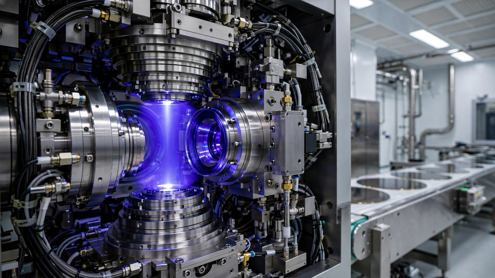

ASML Just Announced 30% More EUV Capacity. Here’s How Many AI Chips That Actually Buys.
ASML’s blowout Q2 2026 earnings came with a headline promise: 30 percent more EUV lithography capacity in each of the next two years. We ran the wafer-layer arithmetic from Veldhoven through TSMC’s fabs to Nvidia’s packaging lines. Twenty extra machines per year, distributed across five-plus customers and 20-plus lithography layers per chip, translate to roughly 3 to 5 million additional GPU-class dies annually. Against hyperscaler demand north of 7 million accelerators a year, the gap narrows but does not close.

Shares of ASML climbed nearly 4 percent on Wednesday morning after the Dutch lithography monopolist reported second-quarter revenue of €9.3 billion against consensus expectations of €8.8 billion, with gross margin landing at 54 percent. Full-year guidance jumped to €43–45 billion, a 16 percent midpoint increase over the prior range that analysts across Wall Street called a blowout. JPMorgan said the results should close a valuation gap with American peers, and UBS raised its target price to €2,100 with a Buy rating.
But buried in CEO Christophe Fouquet’s statement was a number that matters more than any quarterly beat: ASML plans to expand its low-NA EUV manufacturing capacity from roughly 65 systems in 2026 to approximately 85 in 2027, a 30 percent increase, and is investigating a further 30 percent for 2028. DUV immersion capacity follows the same trajectory, climbing from 130 systems this year to about 169 next year, while nearly all of the expanded EUV capacity through 2027 is already fully booked by customers racing to add wafer starts before their competitors do.
Thirty percent sounds enormous. So we ran the math.
Twenty Machines, Five Customers, Twenty Layers
Start with what 20 additional EUV systems actually means once they leave Veldhoven. ASML serves at least five major customers today, including TSMC, Samsung, SK Hynix, Micron, and Intel, and a sixth has now entered the picture: Elon Musk’s Terafab, a joint venture between SpaceX, Tesla, and xAI that CFO Roger Dassen confirmed on Wednesday is already factored into ASML’s capacity expansion plans.
Memory is consuming EUV at an accelerating rate, a shift that fundamentally changes how new capacity gets divided. ASML reported 75 percent growth in memory revenue this year, driven by DRAM makers adopting EUV for tighter pitch layers that high-bandwidth memory stacks require. Of those 20 extra systems, a substantial share will go to SK Hynix, Samsung, and Micron for HBM3E and DDR5 production. Conservatively, 8 to 10 of the 20 new low-NA EUV tools will be allocated to leading-edge logic fabs making AI-class processors.
Here is where the layer count does its damage.
A chip manufactured on TSMC’s N5 process passes through an EUV scanner for more than 10 separate lithography layers. At N3B, WikiChip estimates roughly 25 EUV layers, an 80 percent increase over N5 that TSMC partially clawed back with the cost-reduced N3E variant, which brought the count down to approximately 19 by replacing three double-patterning steps with single EUV exposures. N2, now in volume production, is expected to require 20 to 22 EUV layers per wafer pass, meaning every chip manufactured on any node below 5 nanometers monopolizes a $300 million machine for at least 10 and sometimes 25 separate printing steps before a single die is complete.
ASML published a capacity rule in 2018: one EUV scanner supports roughly 45,000 wafer starts per month for a single lithography layer, and throughput has improved meaningfully since then. Current NXE:3800E tools process 230 wafers per hour, up 44 percent from earlier models, so a generous update might push that single-layer capacity to 55,000 or 60,000 WSPM. But a fab running N3 or N2 needs 20-plus of those layer slots filled, which means you need 20-plus scanners to serve a single fab line at scale.
Ten additional EUV tools allocated to leading-edge logic, divided by 20 EUV layers per advanced chip, equals capacity for about half an incremental gigafab. Call it 22,000 to 25,000 additional wafer starts per month on nodes where AI processors are manufactured.
From Wafers to GPUs: Yield, Area, and Packaging
A 300 mm wafer on TSMC’s 4NP node yields roughly 65 dies at the size of Nvidia’s GH100, the 814 mm² monolithic GPU inside every H100 and H200 server, and after applying a 60 percent yield that number drops to 39 known-good dies per wafer. Blackwell’s B200 uses a different approach: two smaller GB100 chiplets on a CoWoS substrate, each around 400 mm², yielding approximately 120 raw dies per wafer with higher per-die yield but double the packaging complexity.
At 25,000 additional wafers per month and 39 good H100-class dies per wafer, the arithmetic produces about 11.7 million GPU-equivalent dies per year. Sounds massive. It is not.
TSMC’s leading-edge capacity serves Apple, Qualcomm, AMD, MediaTek, Broadcom, and a growing roster of custom silicon programs from Amazon, Google, and Microsoft alongside Nvidia, which commands an estimated 30 to 40 percent of TSMC’s cutting-edge wafer allocation. Apply that share to the incremental capacity and you land at 3.5 to 4.7 million additional GPU-class dies per year attributable to ASML’s expansion.
And every one of those dies still needs advanced packaging, which is where the second bottleneck hides.
Silicon Is No Longer Where Most of the Money Goes
A bill-of-materials teardown of Nvidia’s B200 reveals a counterintuitive cost structure: logic die fabrication accounts for just $900 of a roughly $6,400 production cost, or 14 percent, while high-bandwidth memory consumes $2,900 at 45 percent and advanced CoWoS packaging adds $1,100 at 17 percent alongside yield losses of $1,000 at 16 percent, which means that the physical act of assembling and testing an AI accelerator costs more than twice as much as printing the transistors inside it.
TSMC is racing to quadruple its CoWoS capacity to 130,000 wafers per month by late 2026, but even at that rate analysts expect packaging to remain constrained through 2027, which means ASML can print more wafers than TSMC can package, and the excess silicon waits in inventory for substrate space that does not yet exist.
Cost compounds the problem. TSMC’s 2nm wafers run approximately $30,000 each, a 50 percent premium over 3nm, while 4NP wafers feeding Blackwell production cost roughly $17,000. For a B200 module carrying two logic dies, one wafer’s worth of silicon represents $900 out of $6,400 in total production cost, which means doubling lithography throughput addresses only 14 cents of every dollar spent building an AI accelerator.
Demand That Refuses to Sit Still
Hyperscalers have committed more than $725 billion in AI-related capital expenditure across 2025 and 2026, and GPU and accelerator purchases typically account for 30 to 40 percent of datacenter capex, implying $220 to $290 billion in chip spending that translates, at an average selling price of $30,000 per accelerator, to 7 to 10 million units demanded per year.
Nvidia shipped an estimated 3 to 5 million datacenter GPUs in 2025. Supply has grown, but demand has grown faster, with every new foundation model, every enterprise inference deployment, and every sovereign AI initiative from Abu Dhabi to Tokyo adding orders faster than fabs add capacity. ASML noted on Wednesday that order intake remained “extremely strong” in the first half and that it is already close to filling 2027 EUV orders, with significant 2028 demand materializing.
Terafab adds an entirely new vector to an already constrained allocation. Musk’s proposed $55 billion semiconductor complex in Grimes County, Texas, using Intel’s 14A process technology, would need dozens of EUV systems. ASML’s capacity expansion already accounts for Terafab’s requirements, meaning a portion of those 20 incremental tools are earmarked for a facility that may not produce its first wafer before 2029. Future capacity spoken for by a customer that does not yet exist as a fab is not capacity available to the rest of the industry today.
What This Analysis Cannot Capture
Several factors could shift these estimates in either direction, and some of them are already in motion. ASML’s software-led upgrade business, which grew 30 percent this year, increases the effective throughput of the installed base without shipping a single new tool, and if productivity upgrades push existing scanners from 200 to 230 wafers per hour on average, the installed base of 280-plus tools gains capacity equivalent to roughly 40 additional machines without a single new system leaving Veldhoven.
High-NA EUV introduces a different calculus that could reshape these estimates over a longer horizon, and Intel has become the first chipmaker to confirm it is using ASML’s High-NA system in actual production. High-NA tools can pattern finer features in a single pass, potentially reducing the total EUV layer count at sub-2nm nodes, but they are slower at 175 wafers per hour versus 230 for low-NA and dramatically more expensive per system.
ASML’s 1,000-watt EUV source, demonstrated in February, promises a 50 percent throughput increase to 330 wafers per hour by decade’s end, but that upgrade path will not ship in production volume before 2029 or 2030.
On the demand side, custom silicon programs from cloud providers could consume a growing share of leading-edge capacity, because Amazon’s Trainium, Google’s TPU, and Microsoft’s Maia are all manufactured at TSMC on advanced nodes, and they compete with Nvidia for the same wafer-layer exposures from the same EUV scanners, further diluting the per-customer impact of any capacity expansion.
Where This Leaves the Industry
ASML’s 30 percent capacity increase is meaningful. It is not sufficient. After distributing 20 new EUV tools across at least five customers, splitting allocations between logic and memory, and dividing each tool’s output by the 20-plus lithography layers a modern AI chip demands, the expansion translates to roughly 3 to 5 million additional GPU-class dies per year. Against demand conservatively estimated at 7 to 10 million accelerators annually, the bottleneck narrows without breaking.
For investors, ASML’s earnings beat and guidance raise confirm that the company sits on the right side of an inelastic demand curve. Its stock, already trading at 38 times 2027 consensus earnings per Jefferies, reflects an almost-utility-like pricing power that comes from being the only supplier of a tool no advanced chipmaker can do without.
For AI infrastructure planners at Meta, Microsoft, Google, and Amazon, the math is sobering, because a 30 percent increase in EUV capacity does not translate to a 30 percent increase in available GPUs. It translates to a mid-single-digit percentage improvement in total AI chip supply after accounting for layer counts, customer distribution, yield, packaging constraints, and the growing share of EUV capacity consumed by memory. Planning assumptions that depend on hardware abundance by 2027 need revision.
For anyone watching from outside the semiconductor supply chain, the structural picture is clear. One company in the Netherlands, supplied by two companies in Germany, builds every machine that prints every advanced chip on Earth. They just promised to build 30 percent more of them. We did the arithmetic on what that 30 percent actually buys. Not as many chips as you think.